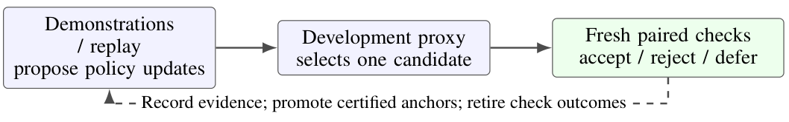
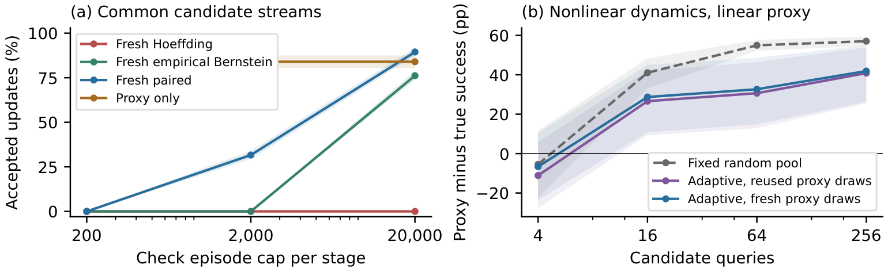

TL;DR
An update gate should be audited for the learning it blocks as well as the errors it stops: fresh paired checks admit 31.6% of a common update stream where a range-based confidence gate admits none.
Abstract
Independent evaluation can reject harmful policy updates yet also prevent useful continual learning. We argue that update admission must be assessed through both error control and retained learning opportunities at a stated interaction budget. We identify a concrete failure: a range-based confidence gate cannot certify unchanged old-task behavior within otherwise substantial budgets. A standard paired-binomial construction reduces this burden when outcome disagreements are rare. We also specify certified historical-reference promotion and a round-level missed-opportunity metric. In a constructed one-step pushing diagnostic with 32 seeds, fresh paired checks admit 31.6% of a common update stream at 2,000 episodes per stage, versus zero for the range-based gate; unconditional replay nevertheless learns better in closed-loop runs. A separate learned-dynamics stress test distinguishes model bias from feedback-selection error. The contribution is an admission-audit protocol with analytical and synthetic evidence; physical-robot and VLA validation remain open.
Results


Paper
Download PDF (9 pages)
BibTeX
@inproceedings{ma2026when,
title = {When Validation Stops Learning: Auditing Update Admission for Continual Embodied Agents},
author = {Qinzhen Ma and Ruihai Wu},
booktitle = {NeurIPS 2026 Workshop on Continual Learning in the Era of Foundation Models and Embodied Agents},
year = {2026}
}